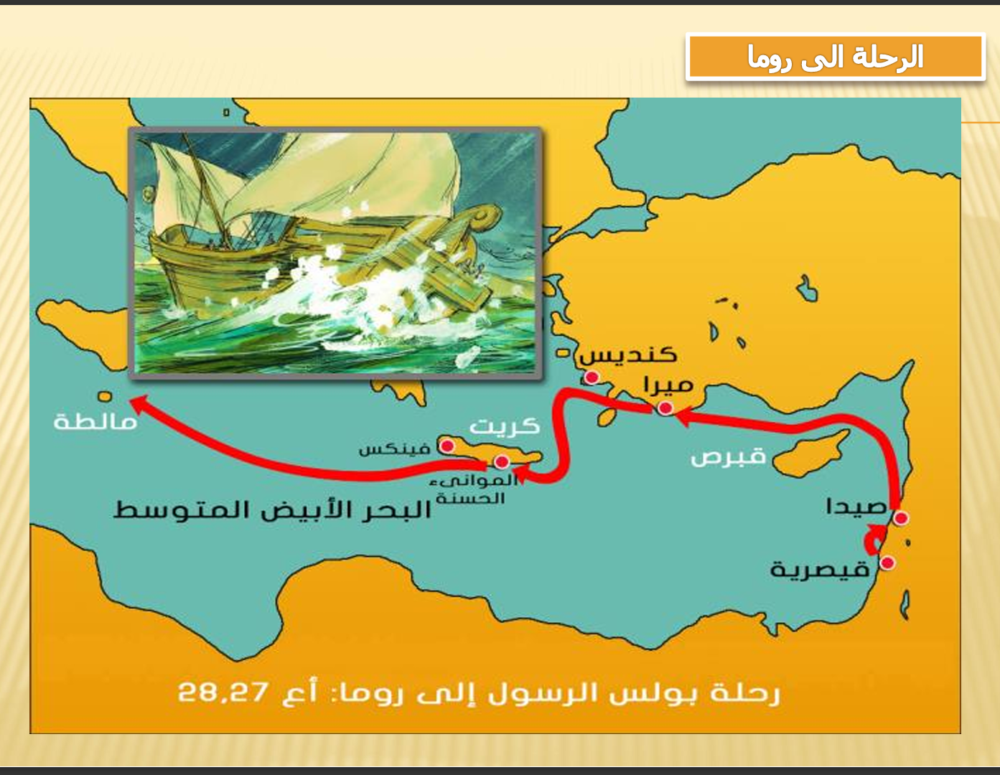
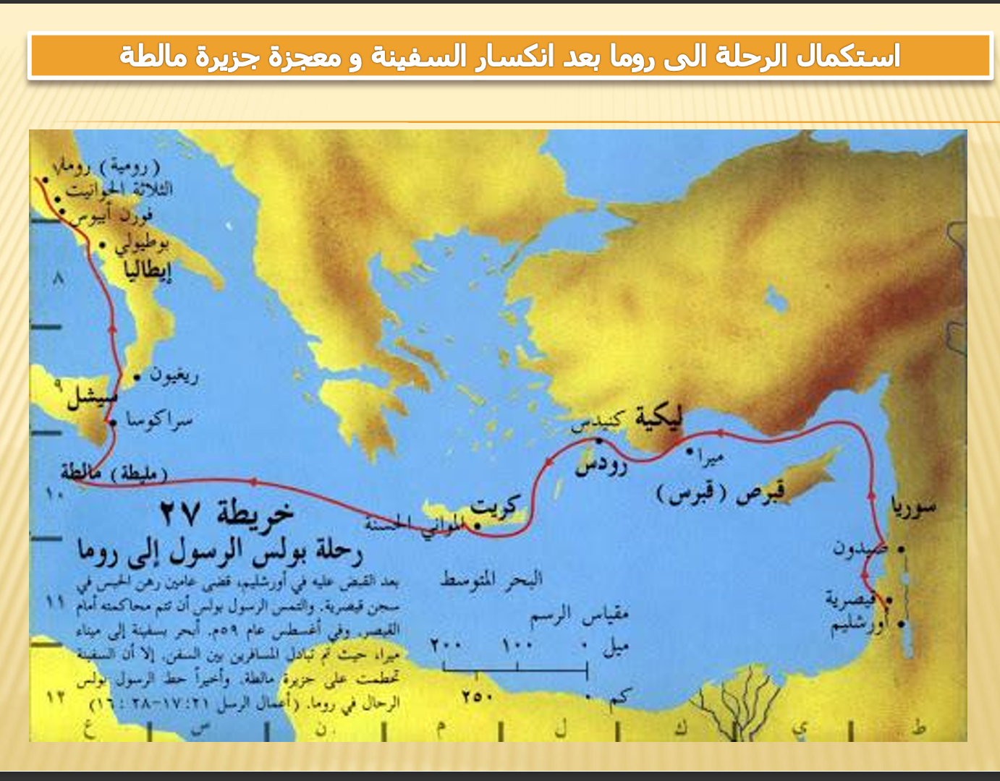
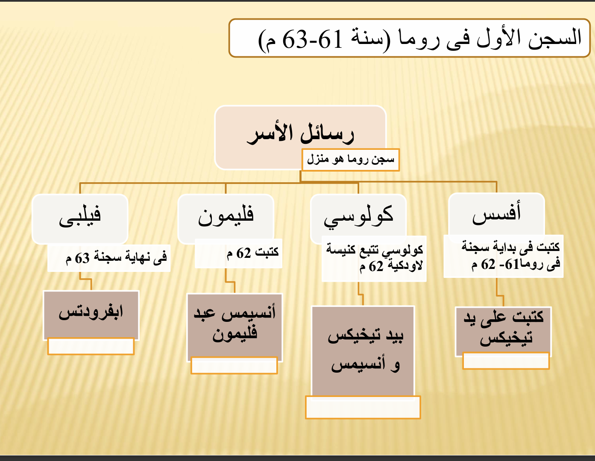
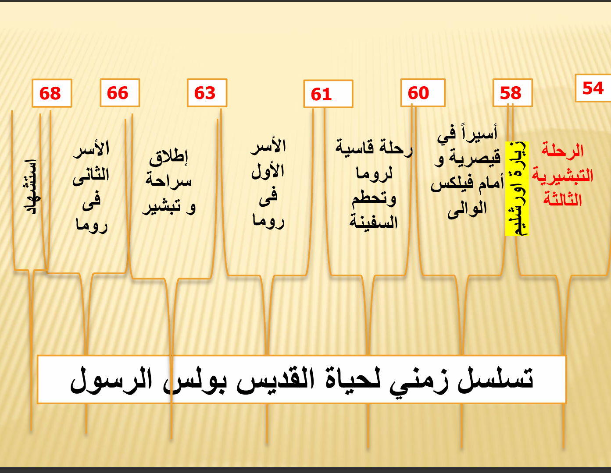

رحلة الأسر إلى روما
كان المسار الأخير للقديس بولس إلى عاصمة الإمبراطورية
الي اقاصي الارض
كان المسار الأخير للقديس بولس إلى عاصمة الإمبراطورية
الي اقاصي الارض
بدأت أحداث الأسر لما اتقبض على بولس في الهيكل بأورشليم بسبب اتهامات اليهود ليه، وبعدها هربوه لقيصرية عشان يحموه من مؤامرة لقتله، وهناك قعد مسجون سنتين واتحاكم قدام فيلكس وفطوس والملك أغريباس. ولأنه كان متمسك بحقه كمواطن روماني، طلب يتحاكم قدام قيصر، فترحّل لروما في رحلة بحرية صعبة جداً انكسرت فيها المركب عند جزيرة مالطة. وفي النهاية وصل روما وقعد سنتين تحت الإقامة الجبرية في بيت مأجره، وكان بيستقبل الناس ويكتب رسايله، لحد ما انتهى الأمر باستشهاده في عهد نيرون.




أول ما بولس حط رجله في أورشليم؛ اليهود هناك أول ما شافوه في الهيكل سخنوا الناس عليه وعملوا قلبان وكانوا هيقتلوه، لولا إن القائد الروماني اتدخل في آخر لحظة وقبض عليه وربطه بسلسلتين عشان يحميه من الدوشة دي (أعمال 21). وتاني يوم وهو بيتحاكم، حصلت خناقة كبيرة في المجلس، وبالليل الرب ظهرله وقاله: "متخافش، زي ما شهدت لي في أورشليم لازم تشهد في روما كمان" (أعمال 23: 11). لما القائد عرف إن فيه 40 راجل يهودي حالفين ما ياكلوا ولا يشربوا غير لما يقتلوا بولس، هربه بالليل في حراسة جيش صغير لمدينة قيصرية عند الوالي "فيلكس" (أعمال 23). وهناك بولس قعد مسجون سنتين، ودخل في محاكمات مع ولاة زي فيلكس وفطوس، وكمان وقف قدام الملك أغريباس اللي من كتر انبهاره بكلام بولس قاله: "إنت بشوية كلام كمان هتخليني أبقى مسيحي!" (أعمال 26: 28). ولأن بولس كان معاه جنسية رومانية، استخدم حقه وقالهم: "أنا عايز أتحاكم قدام قيصر في روما"، وفعلاً وافقوا يرحلوه (أعمال 25: 11). وهما في المركب رايحين روما، قامت عاصفة مرعبة خلت الناس كلها تفقد الأمل، بس بولس وقف وطمنهم وقالهم إن ملاك الرب ظهرله وقاله إن مفيش حد هيموت لأن بولس لازم يقف قدام قيصر (أعمال 27). وفعلاً المركب اتكسرت وغرقت عند جزيرة مالطة، والـ 276 شخص اللي كانوا عليها نجوا كلهم وطلعوا على الشط (أعمال 27: 44). بعد 3 شهور في مالطة، كملوا الطريق لحد ما وصلوا روما، وهناك سمحوا لبولس يقعد في بيت لوحده بس معاه عسكري بيحرسه. قعد سنتين كاملين في البيت ده، كان بيستقبل أي حد يجيله، وبيحكي عن ملكوت الله والرب يسوع بكل حرية ومن غير ما حد يمنعه (أعمال 28: 30-31)، وفي الفترة دي كتب رسايل الأسر المشهورة، وفي الآخر استشهد في عهد نيرون.
الأسر الأول في روما (حوالي 61-63 م): شمل رسائل أفسس، فيلبي، كولوسي، وفليمون، وكان عبارة عن إقامة جبرية سمحت له باستقبال الزوار.
الأسر الثاني في روما (حوالي 67 م): كتب فيه رسالة تيموثاوس الثانية، وكان أسراً قسياً انتهى باستشهاده في عهد نيرون.
ملاحظة: ينسب التقليد الكنسي هذه الرسائل لأسر روما، رغم وجود آراء بحثية تشير لاحتمالية كتابة بعضها في قيصرية أو أفسس.
لعبه صغيره عشان المعلومه تثبت بس قبل ما تدخل قول يارب تشتغل عشان مش بعرف اعمل العاب بامانه مكدبش عليك يعني
ابدأ اللعبة الآن 🎮